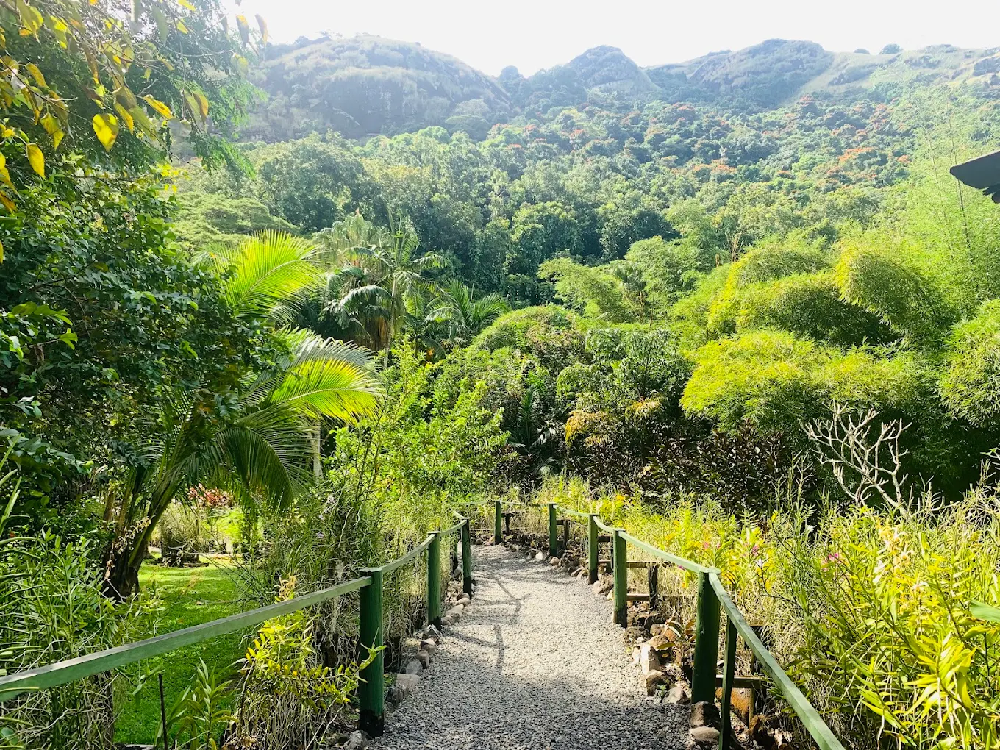
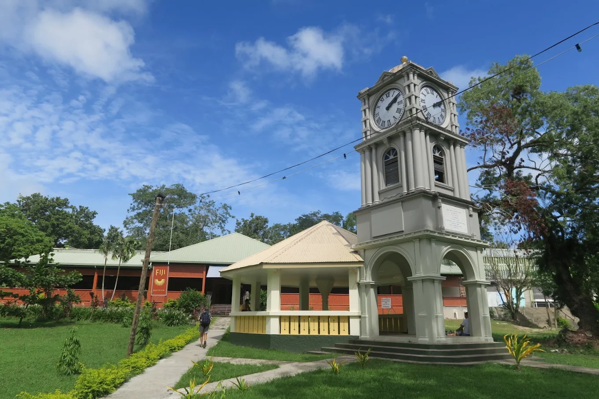

Fiji
O destino escolhido é Fiji, um país localizado na Oceania e composto por 332 ilhas. Possui uma população de aproximadamente 900 mil habitantes,
com IDH de 0,730 e PIB per capita de US$16,563, sendo uma república constitucional e tendo como forma de governo uma democracia parlamentarista.
A escolha foi feita com base em curiosidades do país, como exemplo seu hino nacional, belezas naturais, localidade e planos pessoais.

Informações importantes
- Idiomas oficiais:
- Inglês, Fijiano e Híndi Fijiano.
- Moeda:
- Dólar Fijiano (FJD).
- Melhor época para visitar:
- Maio é o melhor mês para visitar qualquer parte do país.
Imagens:
 O audio acima é o hino nacional de Fiji, criado tendo base um hino da harpa cristã, com sua melodia sendo a mesma.
| Viagem para Fiji | ||
|---|---|---|
| Data da viagem | Atividadea previstas | Custo esperado |
| Junho - Outubro (melhor período) | Cultura local, belezas naturais, paisagens encantadoras, culinária baseada em frutos do mar | R$8.000,00/semana |